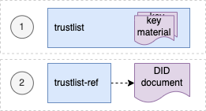

ترجمة آلية — لم يراجعها أي شخص
تُرجمت هذه الصفحة آليًا. لم يراجع أي شخص هذه الترجمة أو يعتمدها، وقد تحتوي على أخطاء. الصفحة بلغة المصدر هي النص المرجعي. اقرأ النص الأصلي (بالإنجليزية)
Machine translation — not reviewed by a person
This page was translated automatically. No person has reviewed or adjudicated this translation, and it may contain errors. The source-language page is the authoritative text. Read the original (English)
مواصفات DID
قوائم الثقة في GDHCN
تصف هذه المواصفة نشر مواد المفاتيح الخاصة بالشبكة العالمية لإصدار الشهادات الصحية الرقمية (GDHCN) في صورة وثائق المعرِّف اللامركزي (DID). ومعرِّفات DID محددة في مواصفة W3C الأساسية لمعرِّفات DID. ويلخّص مفهوم DID الدوافع الأساسية لصيغة DID واستخدامها ضمن نطاق GDHCN.
من مفاتيح التشغيل البيني الحقيقي بين شبكات الثقة القائمة إيجادُ مواءمة في صيغ قوائم الثقة.
| الإصدار | الحالة | الوصف |
|---|---|---|
| 2.0.0 | مسودة | الإصدار 2.0.0 في حالة ما قبل الإصدار لأغراض التحقق وإبداء الملاحظات. وعلى المستوى التقني، يُستخدَم «v2» في API للإشارة إلى وثائق DID التي تتبع مواصفة الإصدار الثاني |
| 1.0.0 | صادرة | الإصدار 1.0.0 متقادم وسيُستبدَل به الإصدار 2.0.0 |
قوائم الثقة 2.0.0
يقدّم الإصدار 2.0.0 متغيِّرين من قوائم الثقة: مُضمَّن ومرجعي.

لكلٍّ من بيئات التطوير (DEV) واختبار قبول المستخدم (UAT) والإنتاج (PROD) قائمة ثقة وفقًا للجدول التالي:
| البيئة | المتغيِّر | URL |
|---|---|---|
| DEV | مُضمَّنة | https://tng-cdn-dev.who.int/v2/trustlist/did.json |
| DEV | مرجعية | https://tng-cdn-dev.who.int/v2/trustlist-ref/did.json |
| UAT | مُضمَّنة | https://tng-cdn-uat.who.int/v2/trustlist/did.json |
| UAT | مرجعية | https://tng-cdn-uat.who.int/v2/trustlist-ref/did.json |
| PROD | مُضمَّنة | https://tng-cdn.who.int/v2/trustlist/did.json |
| PROD | مرجعية | https://tng-cdn.who.int/v2/trustlist-ref/did.json |
يحمل النوع المُضمَّن من قوائم الثقة مواد المفاتيح مباشرةً ضمن خاصية verificationMethod في وثائق DID، ويدعم التحقق الفوري. وعلى مستوى الجذر يحتوي على جميع المفاتيح المستورَدة من بوابة شبكة الثقة (TNG).
تربط القوائم من النوع المرجعي بوثائق DID أخرى قد تحتوي على مواد المفاتيح الفعلية. ولذلك لا تحتوي قوائم الثقة من النوع المرجعي إلا على معرِّفات DID التي يمكن استخدامها لحلّ وثائق DID. ويساعد ذلك على إبقاء وثائق قوائم الثقة الرئيسية موجزة، ويدعم الاكتشاف الديناميكي لبنى DID ومواد المفاتيح.
بنية قوائم الثقة DID
يقدّم الإصدار 2.0.0 بنية هرمية لوثائق DID لدعم حلّ مواد المفاتيح واكتشافها بدقة أكبر. وتُحدَّد مُعامِلات وثائق DID هذه بما يلي وفقًا للمستويات الواردة في الجدول التالي.
| المستوى | الوصف |
|---|---|
| الجذر | مُعامِل ثابت لجميع مواد المفاتيح الموثوقة أو مراجع DID الموثوقة الخاصة بـ GDHCN. |
$domain |
يحتوي على مواد المفاتيح الموثوقة أو مراجع DID الخاصة بـ GDHCN لنطاق ثقة مدعوم. ينبغي أن يكون $domain أحد الرموز الواردة في مجموعة قيم نطاقات الثقة في GDHCN. |
$participant |
يحتوي على مواد المفاتيح الموثوقة أو مراجع DID الخاصة بـ GDHCN لمشارك موثوق. ينبغي أن يكون $participant أحد الرموز الواردة في مجموعة قيم المشاركين في GDHCN. |
$usage |
يحتوي على مواد المفاتيح الموثوقة أو مراجع DID لنوع مدعوم من أنواع استخدام المفاتيح. نوع $usage هو أحد رموز استخدام المفاتيح الواردة في مجموعة قيم استخدام المفاتيح في GDHCN. |
تُنظَّم المستويات تنظيمًا هرميًا بحيث تعمل بوصفها مرشِّحات وفق عملية منطقية AND عند حلّ مواد المفاتيح أو اكتشافها. ويُلاحَظ أن المحرف “-“ يمكن استخدامه حرفَ بدل في كل مستوى فرعي من الجذر. ويتيح ذلك إغفال التصفية على المستوى المعني، فيطابق فعليًا كل محتوى ذلك المستوى.
توضح الأمثلة التالية السلوك المتوقَّع لقائمة الثقة المُضمَّنة:
- يطابق tng-cdn.who.int/v2/trustlist/did.json جميع المفاتيح لجميع قيم
$domainو$participantوأنواع$usageللمفاتيح. - يطابق tng-cdn.who.int/v2/trustlist/
$domain/$participant/did.json جميع أنواع$usageللمفاتيح لقيمة$domainAND$participantمحددة. - يطابق tng-cdn.who.int/v2/trustlist/-/
$participant/did.json جميع أنواع$usageللمفاتيح عبر جميع قيم$domainلقيمة$participantمحددة. - يطابق tng-cdn.who.int/v2/trustlist/
$domain/$participant/$usage/did.json جميع المفاتيح لنوع$usageمحدد للمفتاح لقيمة$domainAND$participantمعطاة. - يطابق tng-cdn.who.int/v2/trustlist/-/
$participant/did.json مواد المفاتيح أو المراجع لجميع قيم$domainلقيمة$participantمحددة دون تصفية أنواع استخدام المفاتيح. - يطابق tng-cdn.who.int/v2/trustlist/-/
$participant/$usage/did.json المفاتيح أو المراجع في جميع قيم$domainلقيمة$participantمحددة ونوع$usageمحدد للمفتاح. - يطابق tng-cdn.who.int/v2/trustlist/
$domain/-/$usage/did.json المفاتيح لجميع قيم$participantلقيمة$domainمحددة مُصفّاةً حسب نوع$usageللمفتاح. - يطابق tng-cdn-who.int/v2/trustlist/-/- مواد المفاتيح لجميع قيم
$domainوجميع قيم$participantدون تصفية نوع$usageمعيّن، ولذلك قد يحتوي did.json على مفاتيح SCA وDSC.
وتوضح الأمثلة التالية السلوك المتوقَّع لقائمة الثقة من النوع المرجعي:
- يحتوي tng-cdn.who.int/v2/trustlist-ref/did.json على جميع مراجع وثائق DID للمستوى الفرعي التالي في صورة معرِّفات DID.
- يحتوي tng-cdn.who.int/v2/trustlist-ref/
$domain/did.json على جميع مراجع وثائق DID على مستوى$participantفي صورة معرِّفات DID لقيمة$domainالمعطاة. - يحتوي tng-cdn.who.int/v2/trustlist-ref/
$domain/$participant/did.json على جميع مراجع وثائق DID على مستوى نوع$usageللمفتاح في صورة معرِّفات DID لقيمتَي$domainو$participantالمختارتين. - يحتوي tng-cdn.who.int/v2/trustlist-ref/
$domain/$participant/$usage/did.json على مرجع إلى DID لقائمة الثقة المُضمَّنة المقابلة لقيم$domainو$participantونوع$usageللمفتاح المختارة، والتي تحتوي على مواد المفاتيح.
ملاحظة: قد تحتوي جميع مستويات قائمة الثقة من النوع المرجعي على مراجع DID إضافية تربط بوثائق DID خارجية موثوقة.
يوضح مخطط بنية قوائم الثقة DID علاقات المرجعية والاحتواء بين أنواع قوائم الثقة للمستويات المحددة.


أمثلة على وثائق DID
وثيقة DID من النوع المرجعي تربط بقائمة الثقة المُضمَّنة لـ $domain: DCC، و$participant: XXA ونوع $usage للمفتاح: DSC.
{
"@context": [
"https://www.w3.org/ns/did/v1",
"https://w3id.org/security/suites/jws-2020/v1"
],
"id": "did:web:worldhealthorganization.github.io:tng-cdn-dev:v2:trustlist-ref:DCC:XXA:DSC",
"controller": "did:web:worldhealthorganization.github.io:tng-cdn-dev:v2:trustlist-ref:DCC:XXA",
"verificationMethod": [
"did:web:worldhealthorganization.github.io:tng-cdn-dev:v2:trustlist:DCC:XXA:DSC"
],
"proof": {
"type": "JsonWebSignature2020",
"created": "2024-11-10T12:00:35Z",
"nonce": "SC56sBBcqqTXh0EPdFlaOWDXxSpwupVa",
"proofPurpose": "assertionMethod",
"verificationMethod": "did:web:raw.githubusercontent.com:WorldHealthOrganization:tng-participants-dev:main:WHO:signing:DID",
"jws": "eyJiNjQiOmZhbHNlLCJjcml0IjpbImI2NCJdLCJhbGciOiJFUzI1NiJ9..MEQCICxoXFEI-o0SupgO0U5BhKjRI1AZaAtAtw_byQMgLm6CAiBTtyJYF7ZMgWTlmivMv5A4In3K6LBEF0AXiCYM2VSSIg"
}
}
قائمة الثقة المُضمَّنة لـ $domain: DCC، و$participant: XXA ونوع $usage للمفتاح: DSC مع مواد المفاتيح:
{
"@context": [
"https://www.w3.org/ns/did/v1",
"https://w3id.org/security/suites/jws-2020/v1"
],
"id": "did:web:worldhealthorganization.github.io:tng-cdn-dev:v2:trustlist:DCC:XXA:DSC",
"controller": "did:web:worldhealthorganization.github.io:tng-cdn-dev:v2:trustlist:DCC:XXA",
"verificationMethod": [
{
"id": "did:web:worldhealthorganization.github.io:tng-cdn-dev:v2:trustlist:DCC:XXA:DSC#XPjhL9Znd1M=",
"type": "JsonWebKey2020",
"controller": "did:web:worldhealthorganization.github.io:tng-cdn-dev:v2:trustlist:DCC:XXA",
"publicKeyJwk": {
"kty": "EC",
"kid": "XPjhL9Znd1M=",
"x5c": [
"MIICuTCCAmCgAwIBAgIUD9k1Q64Eav5r07DQ4Gff/7h7r6QwCgYIKoZIzj0EAwIwdDELMAkGA1UEBhMCWEExFDASBgNVBAgMC1hYQSBDb3VudHJ5MRgwFgYDVQQHDA9YQSBDYXBpdG9sIENpdHkxDDAKBgNVBAoMA1dITzEMMAoGA1UECwwDUiZEMRkwFwYDVQQDDBBOYXRpb25YQV9UTlBfU0NBMB4XDTI0MDgwMjEzNDM0M1oXDTI2MDgwMjEzNDM0M1owfzELMAkGA1UEBhMCWEExFDASBgNVBAgMC1hYQSBDb3VudHJ5MRgwFgYDVQQHDA9YQSBDYXBpdG9sIENpdHkxDDAKBgNVBAoMA1dITzEMMAoGA1UECwwDUiZEMSQwIgYDVQQDDBtIZWFsdGggQWRtaW5pc3RyYXRpb24gb2YgWEEwWTATBgcqhkjOPQIBBggqhkjOPQMBBwNCAAT3TVbWYsSYYarCUv8sfvmv2y0GjDEI+PAkm/92na/zAOoV8O2w7rov/Txk3wwz/jMoKvx+IgSfYoyygtGetYEdo4HEMIHBMA4GA1UdDwEB/wQEAwIHgDAdBgNVHQ4EFgQUhjRj4qGi0+rt7ka7GLiol6q2+78wHwYDVR0jBBgwFoAUoir+zkKsSL7OkG8dPyThX49GLtEwPQYDVR0fBDYwNDAyoDCgLoYsaHR0cDovL2NybC5leGFtcGxlZG9tYWluLmV4YW1wbGUvQ1JML1NDQS5jcmwwMAYDVR0lBCkwJwYLKwYBBAGON49lAQEGCysGAQQBjjePZQECBgsrBgEEAY43j2UBAzAKBggqhkjOPQQDAgNHADBEAiATU7uopFD4U3mLHHQn+0ncg4gb5ZazhhrXMXwzAD4NbgIgd3jcskFPyOoBGut8oyXu+nKYKr5zFCqmXkYlILqCo6Q=",
"MIICMDCCAdWgAwIBAgIUFqWc0xbrcpAettDF8gEymTzDtSkwCgYIKoZIzj0EAwIwdDELMAkGA1UEBhMCWEExFDASBgNVBAgMC1hYQSBDb3VudHJ5MRgwFgYDVQQHDA9YQSBDYXBpdG9sIENpdHkxDDAKBgNVBAoMA1dITzEMMAoGA1UECwwDUiZEMRkwFwYDVQQDDBBOYXRpb25YQV9UTlBfU0NBMB4XDTI0MDgwMjA3MTY0MVoXDTI4MDgwMjA3MTY0MVowdDELMAkGA1UEBhMCWEExFDASBgNVBAgMC1hYQSBDb3VudHJ5MRgwFgYDVQQHDA9YQSBDYXBpdG9sIENpdHkxDDAKBgNVBAoMA1dITzEMMAoGA1UECwwDUiZEMRkwFwYDVQQDDBBOYXRpb25YQV9UTlBfU0NBMFkwEwYHKoZIzj0CAQYIKoZIzj0DAQcDQgAEeKTWEuRQ4ftDRaTBA6++wea8ODmEqCLE/nWTcvcX069g3YlWEokVgEIMEumXcez++bcIayhRYDi4itAqd5DmJ6NFMEMwEgYDVR0TAQH/BAgwBgEB/wIBADAOBgNVHQ8BAf8EBAMCAQYwHQYDVR0OBBYEFKIq/s5CrEi+zpBvHT8k4V+PRi7RMAoGCCqGSM49BAMCA0kAMEYCIQC2+Bl6No20L/uSxr4bJSPDAAJ37UhhH52ppOElxB1dqgIhANbn1ZF0DNWYyH+eKBTrY+14zbzhDxlXWh/Go1OM9ZZ/"
],
"crv": "P-256",
"x": "APdNVtZixJhhqsJS_yx--a_bLQaMMQj48CSb_3adr_MA",
"y": "AOoV8O2w7rov_Txk3wwz_jMoKvx-IgSfYoyygtGetYEd"
}
}
],
"proof": {
"type": "JsonWebSignature2020",
"created": "2024-11-10T12:00:21Z",
"nonce": "Gp3uOuUTNgAFxm31fIjNy7yYt34aOP0g",
"proofPurpose": "assertionMethod",
"verificationMethod": "did:web:raw.githubusercontent.com:WorldHealthOrganization:tng-participants-dev:main:WHO:signing:DID",
"jws": "eyJiNjQiOmZhbHNlLCJjcml0IjpbImI2NCJdLCJhbGciOiJFUzI1NiJ9..MEYCIQD8AbUnGxHgmkqNQTzl6E0ZJocZ0N-vrziFB9-jgRSXbgIhAJUB0Wq5YUJPcywS15JMdoiVJDV_ubWuEZwRnuM5A8QB"
}
}
ملاحظة: تستخدم المفاتيح المحددة معرِّف المفتاح (kid) المُرمَّز بـ base64 معرِّفًا لها، ويُمثَّل بوصفه أجزاءً (#) في معرِّف طريقة التحقق، ويمكن حلّه باستخدام التصفية من جانب العميل.
التحقق من وثيقة قائمة ثقة
تحمل كل وثيقة DID لقائمة ثقة، مُضمَّنة كانت أو مرجعية، proof. والإثبات هو إثبات بيانات مترابطة من نوع JSON Web Signature 2020 مُنشأ بمفتاح التوقيع الخاص بمنظمة الصحة العالمية (WHO) للبيئة المعنية. ويجب (MUST) على الجهة المُتحقِّقة التحقق من هذا الإثبات قبل أن تثق بأي مفتاح أو مرجع تدرجه الوثيقة، ويجب (MUST) عليها رفض أي وثيقة لا يُتحقَّق من إثباتها. ولا يُغني جلب الوثيقة عبر HTTPS من المضيف الذي يسمّيه DID الخاص بها عن هذا التحقق، لأن ذاكرة تخزين مؤقت أو موقعًا مرآويًا قد يقدّم الوثيقة.
ملاحظة: الوثائق النموذجية أعلاه سابقة للصيغة الحالية. فالوثائق المنشورة اليوم تحمل أيضًا tng-context الخاص بالبيئة في @context (مثل https://smart.who.int/trust/tng-context/v1-DEV.jsonld)، ولكل طريقة تحقق أيضًا الأعضاء domain وparticipant وkeyusage، وكل منها كائن يحتوي على code واحد.
الموقِّع. يسمّي proof.verificationMethod معرِّف DID الخاص بالموقِّع. ويجب (MUST) على الجهة المُتحقِّقة مقارنته بمعرِّف DID للموقِّع الذي تثق به للبيئة المعنية، والمُهيَّأ مسبقًا. والإثبات الذي يُتحقَّق منه مقابل معرِّف DID آخر لا يُثبت شيئًا.
| البيئة | DID الموقِّع |
|---|---|
| DEV | did:web:raw.githubusercontent.com:WorldHealthOrganization:tng-participants-dev:main:WHO:signing:DID |
| UAT | يُؤكَّد لاحقًا |
| PROD | يُؤكَّد لاحقًا |
تحتوي وثيقة DID الخاصة بالموقِّع على طريقة تحقق واحدة. وقيمة id فيها هي DID الموقِّع، ونوعها JsonWebKey2020، وقيمة publicKeyJwk فيها مفتاح EC من نوع P-256، ولذلك تكون قيمة alg هي ES256 إن وُجدت.
سياقات JSON-LD. يوقّع الإثبات صيغة RDF من الوثيقة، ولذلك يعتمد التوقيع على المحتوى الدقيق لكل سياق JSON-LD. ويجب (MUST) على الجهة المُتحقِّقة معالجة الوثائق باستخدام النسخ أدناه المحفوظة محليًا. ولا يجوز (MUST NOT) لها استدعاء عناوين URL للسياقات وقت التحقق: فلو تغيّرت نسخة منشورة، لأنتج ملف JSON نفسه بايتات موقَّعة مختلفة.
| URL السياق | المحتوى الذي يستخدمه الموقِّع |
|---|---|
https://www.w3.org/ns/did/v1 |
سياق W3C DID v1، بقيمة sha256 4f3eae5568c9c5f036a082088f9e192019ee06faa78973c87ff91d5421b88dad |
https://w3id.org/security/suites/jws-2020/v1 |
سياق مجموعة JWS 2020، بقيمة sha256 d648e05ddc6577827ca2bfd5e931f53e9ebc6e52a57a8da81df4ec8c46ffcd1e |
https://smart.who.int/trust/tng-context/v1-DEV.jsonld, v1-UAT.jsonld, v1.jsonld |
tng-context/v1-DEV.jsonld، v1-UAT.jsonld، v1.jsonld، كما ينشرها هذا الدليل |
https://w3id.org/security/v3 (خيارات الإثبات فقط) |
سياق security v3 كما هو مُضمَّن في ld-signatures-java 1.11.0 (security-v3-unstable.jsonld)، بقيمة sha256 311be32772d8e42f96c1a6ae899e3fa15efb06c27cfd207d86e8abb9951a3e74 |
يربط tng-context كلًّا من domain وparticipant وkeyusage بمعرِّفات IRI لمجموعات القيم (ValueSet)، ويربط code بـ @id. ونتيجةً لذلك تصبح الرموز معرِّفات IRI في الصيغة الموقَّعة، ويُحوَّل المفتاح نفسه إلى صيغة قانونية مختلفة في كل بيئة.
مفتاح JWK. في السياق JsonWebKey2020، يكون publicKeyJwk قيمة JSON حرفية (@json). ويدخل الصيغة الموقَّعة في صورة JSON القانونية وفق RFC 8785. وأعضاء مفتاح JWK في قائمة الثقة سلاسل نصية أو مصفوفات من السلاسل النصية: kty وkid وcrv وx وy وn وe وx5c. ولهذا لا تنشأ أي مسألة تتعلق بتنسيق الأعداد في الصيغة القانونية. ويجوز (MAY) للجهة المُتحقِّقة رفض مفتاح JWK يحتوي على عضو بقيمة من أي نوع آخر.
الخوارزمية.
- أزِل
proofمن الوثيقة. ثم حوِّل الباقي إلى الصيغة القانونية باستخدام التحويل القانوني لمجموعات بيانات RDF (URDNA2015)، مستخدمًا السياقات أعلاه، وسلسِل الناتج في صورة N-Quads قانونية. - خذ
proofدونjwsبوصفها خيارات الإثبات، مع تعيين@contextإلىhttps://w3id.org/security/v3. ثم حوِّل الخيارات إلى الصيغة القانونية وسلسِلها بالطريقة نفسها. - مُدخَل التوقيع هو البايتات الـ 64
SHA-256(proof options N-Quads) || SHA-256(document N-Quads). proof.jwsتوقيع JWS منفصل (RFC 7515 الملحق F) بحمولة غير مُرمَّزة (RFC 7797). وترويسته المحمية هي{"b64":false,"crit":["b64"],"alg":"ES256"}بالضبط. تحقَّق من توقيع ES256 علىASCII(BASE64URL(header)) || '.' || signing inputباستخدام مفتاح الموقِّع.- التوقيع حاليًا
SEQUENCE { r, s }من نوع ECDSA مُرمَّز بترميز DER (من 70 إلى 72 بايت). ويشترط RFC 7518 §3.4 القيمةr || sذات الـ 64 بايت، ويُتابَع تصحيح الموقِّع في tng-key-distribution#85. وإلى أن يُصحَّح الموقِّع، ينبغي (SHOULD) للجهات المُتحقِّقة قبول أي من الصيغتين، وينبغي (SHOULD) لها تحليل DER تحليلًا صارمًا.
ترتّب N-Quads القانونية الأسطرَ حسب نقطة الترميز في Unicode. ولا يختلف ترتيب السلاسل النصية في Java (وحدات ترميز UTF-16) إلا في المحارف التي تتجاوز U+FFFF، ولا تحتوي أي وثيقة من وثائق قوائم الثقة على أيٍّ منها. ويجوز (MAY) للجهة المُتحقِّقة رفض وثيقة تحتوي على مثل هذه المحارف بدلًا من تخمين الترتيب.
يُحتفَظ بمثال عملي، مع N-Quads القانونية الخاصة به ومُدخَل التوقيع وتنفيذين مستقلين للجهة المُتحقِّقة، في litlfred/smart-trust-tools (المتطلب STT-TRU-006).
البيئات والمستودعات
تُدار قوائم الثقة باستخدام GitHub وتُنشَر عبر صفحات GitHub.
| البيئة | رابط المستودع | رابط الصفحات |
|---|---|---|
| التطوير | https://github.com/WorldHealthOrganization/tng-cdn-dev | https://worldhealthorganization.github.io/tng-cdn-dev |
| UAT | https://github.com/WorldHealthOrganization/tng-cdn-uat | https://tng-cdn-uat.who.int |
| الإنتاج | يُحدَّد لاحقًا. | https://tng-cdn.who.int |
مواصفة قوائم الثقة 1.0.0
المواصفة الأولية متقادمة.
مستند DID الإصدار v1.0 (متقادم)
تستند الصيغة الموحدة إلى مواصفة المعرِّفات اللامركزية (DIDs) v1.0. والمعرِّفات اللامركزية هي معرِّفات فريدة عالمياً على شكل URI. ويتضمن مخطط URI اسم طريقة يقابل طريقة قياسية يمكن بها استبيان مستند DID. ومستند DID هذا هو مستند JSON-LD منظَّم يلتقط كل مفتاح عمومي قائم (بصرف النظر عن صيغة X.509 أو JWK المستخدمة) لدى أعضاء شبكة الثقة في صيغة مشتركة. ويتيح إضافة بيانات وصفية إضافية (مثل الغرض المقصود ومعرِّفات المفاتيح) إلى المفاتيح القائمة دون تغيير المفاتيح الأساسية نفسها. ويوفر وسيلة لنشر قوائم رئيسية بالمفاتيح المعترف بها والمستخدمة من قِبل شبكة ثقة وتوقيعها تشفيرياً.
طريقة DID المختارة للصيغة الموحدة هي did:web، وهي طريقة لاسترجاع مستندات DID عبر البنية التحتية القائمة للويب (https). وتأخذ معرِّفات did:web الشكل <DOMAIN NAME>:<PATH COMPONENT 1>:...: <PATH COMPONENT N>. ويتم الاستبيان عبر طلب https GET إلى URL المُشكَّل من هذا المعرِّف بواسطة https://DOMAIN NAME/PATH COMPONENT 1/.../PATH COMPONENT N/did.json. فعلى سبيل المثال، يُستبان did:web:example.com:my:path إلى مستند DID من URL https://example.com/my/path/did.json. وقد تُدعم طرائق did إضافية مستقبلاً.
ينبغي أن يتضمن مستند DID نفسه:
- حقل ‘id’ وهو DID نفسه ويمثل موضوع DID، أي قائمة الثقة في هذه الحالة
- قائمة بالمفاتيح العمومية ضمن الحقل ‘verificationMethod’
- توقيع اختياري عبر حقل ‘proof’
تمثل المصفوفة verificationMethod مفاتيح التوقيع الفردية المرتبطة بالجهات المُصدِرة ضمن الكيان الذي يمثله موضوع DID، وتتضمن:
- حقل
idوهو عنوان DID URL مكوَّن من DID الخاص بمستند DID هذا ومعرِّف المفتاح على شكل DID#key - المتحكِّم في المفتاح العمومي، وقد يكون المستند الحالي (في حالة نشر مفتاح من قِبل عضو في شبكة الثقة) أو مصدر المفتاح العمومي في حالة المُجمِّع
- مفتاح JWK العمومي، بما في ذلك شهادة x509 الخاصة بالمفتاح وسلسلة الثقة حتى سلطة التصديق الجذرية
يمكن توقيع مستند DID نفسه بإضافة كتلة ‘proof’ تتضمن تفاصيل التوقيع والمفتاح المستخدم للتحقق.
لمزيد من المعلومات عن صيغة مستند DID لمواصفة قائمة الثقة، انظر وثائق مواصفة قائمة الثقة WHO DDCC. وللاطلاع على مثال لمستند DID موقَّع، انظر الملحق A من الوثائق.